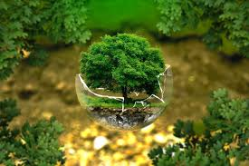

About Chesapeake Bay
The Chesapeake Bay is the largest estuary in the United States. It plays a vital role in the ecosystem, supporting a wide range of wildlife and providing resources for millions of people.
Wildlife of Chesapeake Bay
Chesapeake Bay is home to over 3,600 species of plants and animals. From the majestic blue crabs to the diverse bird population, it offers an incredible variety of life.
Conservation Efforts
Efforts are underway to protect and restore the Chesapeake Bay. These efforts include pollution reduction, habitat restoration, and community engagement.
